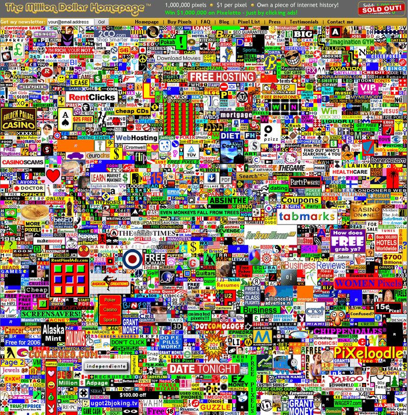

Невзаимозаменяемый токен
Невзаимозаменя́емый то́кен (NFT, non-fungible token), также уникальный то́кен — вид криптографических токенов, каждый экземпляр которых уникален (специфичен) и не может быть обменен или замещён другим аналогичным токеном, хотя обычно токены взаимозаменяемы по своей природе.
Невзаимозаменяемый токен представляет собой сертификат уникальности цифрового объекта — цифровой криптографический сертификат, который подтверждает право на владение цифровым активом (цифровым артефактом, файлом). NFT не препятствует копированию цифрового артефакта, он только закрепляет право владения оригинальным экземпляром цифрового артефакта.
NFT подвергаются критике из-за высоких затрат на электроэнергию и большого выброса диоксида углерода в процессе проверки транзакций , а также из-за использования NFT мошенниками. Под сомнение ставится и полезность установки права собственности на зачастую нелегальном нерегулируемом рынке.
История
В 2013—2014 годах начались эксперименты с NFT на скриптовом языке блокчейна Bitcoin (проекты Colored Coins и Counterparty).
В октябре 2015 года был запущен первый полноценный NFT проект Etheria, который был продемонстрирован вживую на DEVCON 1, первой конференции разработчиков Ethereum в Лондоне, Великобритания, всего через три месяца после запуска самого блокчейна Ethereum. Большинство из 457 покупаемых и продаваемых шестиугольных плиток Etheria не продавались более 5 лет до 13 марта 2021 года, когда возобновление интереса к NFT спровоцировало ажиотаж покупателей. В течение 24 часов все плитки текущей и предыдущей версий, каждая из которых жестко закодированы в 1 ETH (0,43 цента на момент запуска), были проданы на общую сумму 1,4 миллиона долларов.
В ноябре 2016 года был запущен первый NFT проект, который хранит изображения непосредственно в блокчейне, PixelMap. Вдохновленный The Million Dollar Homepage, PixelMap был заново открыт в августе 2021 года, продав первые 3000 плиток за 3,3 миллиона долларов.
Применение
Невзаимозаменяемые токены используются на нескольких платформах для подтверждения факта владения цифровыми активами и права их использования. Чаще всего речь идёт о цифровых предметах, таких как экземпляры произведений компьютерного искусства, коллекционные цифровые предметы, онлайн-игры.
Полностью цифровое искусство (только в форме цифрового файла без иного физического носителя) стало одним из
первых вариантов использования уникальных токенов, так как они позволяют обеспечить доказательство
подлинности цифрового объекта и факта владения им.
Без невзаимозаменяемых токенов крайне сложно
проверить
законность распространения такого искусства через Интернет. В феврале 2021 года работа американского
цифрового художника Майка Винкельмана (известного под псевдонимом Beeple) «Каждый день. Первые 5000 дней»
стала первым произведением цифрового искусства, выставленным на аукционе Кристис. Несколькими днями ранее
GIF-анимация Nyan Cat была продана на интернет-аукционе за 590 тыс. долларов США.
Стандарты
Для поддержки использования блокчейна в игровой индустрии были разработаны особые стандарты токенов.
- ERC-998
- первая версия
- вторая версия ERC-875
- ERC-721
- ERC-1155
Стандарт ERC-998 позволяет объединить разные NFT в один составной NFT, а ERC-875 — передать несколько токенов новому владельцу в одной транзакции
ERC-721 был первым стандартом для невзаимозаменяемых цифровых активов. Это унаследованный стандарт смарт-контрактов Solidity. Его пользователи могут создавать новые совместимые с ERC-721 контракты, импортируя их из библиотеки OpenZeppelin
ERC-1155 привнёс в мир NFT идею полузаменяемости, а также предоставляет расширенный набор функций для ERC-721, что означает, что актив ERC-721 может быть построен с использованием
Реализация
Создать уникальный токен и связать с ним медиафайл можно самостоятельно и бесплатно на сервисе opensea.io. Для этого потребуется адрес в Ethereum. Если его нет, для генерации можно воспользоваться множеством сервисов криптовалютных кошельков, одним из вариантов которых является MetaMask в форме расширения для популярных браузеров или мобильного приложения, не требующий регистрации и передачи каких-либо персональных данных.
Передать уникальный токен на другой Ethereum-адрес, вне зависимости, принадлежит он тому же человеку или другому, возможно только по процедурам обработки смарт-контрактов, что подразумевает уплату системе (сети узлов Ethereum) комиссии.
Список источников
- Schroeder, Stan. Crypto trading card game 'Gods Unchained' looks pretty sweet in first gameplay trailer
- Andrew Wang. The NFT scammers are here The Verge (21 сентября 2021). Дата обращения: 16 декабря 2021.
- Connor, Sephton. Как устроена технология NFT и как она может повлиять на развитие крипторынка, Currency.com.